Guía de Astrid y Lucas para Hero Wars: Dominion Era
- Por: Alexandre Domingos. .
Astrid y Lucas no son unos tiradores convencionales. Astrid no obtiene Energía: cada ataque llena una barra roja de Furia hasta que Lucas carga hacia la primera línea, absorbe los golpes enemigos sin recibir daño normal y convierte la batalla en una cacería frenética. Esta única regla hace que el dúo sea realmente diferente de todos los demás héroes de Hero Wars: Dominion Era.
Su conjunto de habilidades renovado por fin hace que la asociación se sienta completa. Lucas ahora amenaza a grupos con ataques de área más fuertes, Astrid apoya a ambos mediante Naturaleza desenfrenada y la Marca del cazador compartida abre una conexión emocionante con Adam y otros Cazadores. En mi opinión, el dúo alcanza su mejor nivel cuando construyes alrededor de este ritmo en vez de tratar a Astrid como otra tiradora de retaguardia.
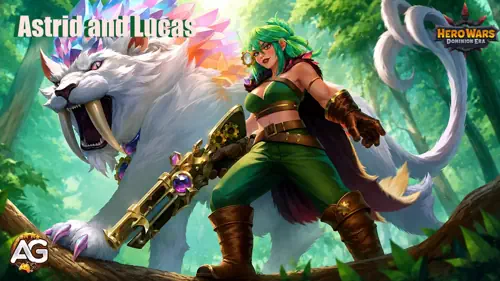
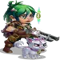
📋 Índice de Astrid y Lucas
- ¿Quiénes son Astrid y Lucas?
- Valoración en el meta
- Estadísticas máximas
- Pros y contras
- Habilidades y prioridad
- Patronazgo de mascotas
- Mejores skins
- Mejores artefactos
- Mejores glifos
- Mejores sinergias
- Conclusión
¿Quiénes Son Astrid y Lucas en Hero Wars: Dominion Era?
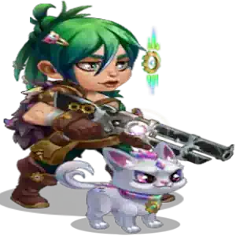
Astrid es una tiradora de Agilidad que lucha junto a Lucas, su fiel mascota. Astrid dispara desde atrás mientras Lucas cambia el campo de batalla: con la Furia al máximo, corre hacia delante, protege a los aliados atrayendo ataques y destroza a los enemigos cercanos. Su identidad de Cazadores cobra más importancia tras la Ascensión, porque los enemigos marcados pueden proporcionar más Furia a Astrid cada vez que los Cazadores aliados les infligen daño.
- Rol principal: Tirador
- Roles adicionales: Guerrero, Tanque, Cazador
- Estadística principal: Agilidad
- Posición: #57, retaguardia
- Cómo conseguir Piedras de Alma: Campaña, Cofres de Almas, Atrio de Almas
- Patronazgo: Fenris, Mara, Vex
- Mejor sinergia: Adam y equipos de Cazadores
La Mecánica Única de Furia de Astrid
Astrid obtiene un 17% de Furia con cada ataque en vez de acumular Energía. Al llegar al 100%, su habilidad definitiva queda disponible y libera a Lucas. Por eso, héroes de control de Energía como Satori y Jorgen no pueden retrasar su barra de recursos de la forma habitual. Observa la barra roja bajo su salud: su ritmo depende de los ataques, no del daño recibido ni de la manipulación de Energía.
Astrid y Lucas - Estadísticas Máximas en Hero Wars Dominion Era
| Estadística | Valor | Estadística | Valor |
|---|---|---|---|
| Agilidad |  17,925 17,925 |
Inteligencia |  2,832 2,832 |
| Fuerza |  3,259 3,259 |
Salud |  514,477 514,477 |
| Ataque Físico |  108,049 108,049 |
Ataque Mágico |  8,496 8,496 |
| Armadura |  35,293 35,293 |
Defensa Mágica |  11,372 11,372 |
| Penetración de Armadura |  54,871 54,871 |
Precisión |  17,925 17,925 |
| Resistencia a Golpes Críticos |  17,925 17,925 |
Poder |  2,394,132 2,394,132 |
Pros y Contras de Astrid y Lucas - Hero Wars: Web y Facebook
✅ Pros
- La Furia única ignora las estrategias normales de control de Energía.
- Lucas protege a los aliados avanzando y recibiendo golpes enemigos.
- Fuerte presión de área y daño creciente mientras Lucas está enfurecido.
- La Marca del cazador permite aturdimientos repetibles y sinergia con Adam.
- La Ascensión puede dar un 30% de reducción de daño a todos los Cazadores aliados.
- Ataque Físico y Penetración de Armadura muy altos con inversión máxima.
❌ Contras
- El ataque básico lento de 5 segundos vuelve la Furia vulnerable a interrupciones.
- Lucas pierde un 7% de Furia cada vez que recibe un golpe, acortando su ventana activa.
- Su valor completo depende de Ascensiones tardías y aliados Cazadores.
- El control exige que los enemigos tengan la Marca del cazador cuando Lucas ataque.
- La baja Defensa Mágica expone a Astrid a fuertes ráfagas mágicas.
- No tiene curación, esquiva, vampirismo ni probabilidad de crítico propios.
Prioridad de Habilidades de Astrid y Lucas - Hero Wars: Dominion Era
Para principiantes, Naturaleza desenfrenada mejora de inmediato toda la rotación del dúo. Después, invierte en el daño de Lucas y la fiabilidad de la marca de Astrid; los bonos de Ascensión son poderosos, pero llegan mucho más tarde.
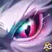
1 - ¡Adelante, Lucas! (Blanca/Definitiva)
Descripción en el juego: Cada vez que Astrid ataca, obtiene un 17% de Furia. Al alcanzar el 100%, puede usar su primera habilidad: su mascota adopta la forma de Furia y corre a la primera línea, recibiendo golpes en lugar de otros personajes. Los ataques no dañan a la mascota, pero cada golpe enemigo reduce su Furia un 7%. Mientras conserve Furia, ataca a los enemigos más cercanos. Cuando se agota, vuelve a su forma pasiva.
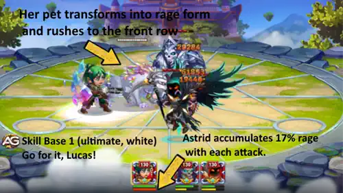
Explicación: Astrid necesita unos seis ataques básicos sin interrupción para llenar la barra. Lucas avanza y no pierde salud por ataques normales; los golpes consumen Furia y acortan su estancia. Después causa 55.367 de daño físico de área por ataque, por lo que el Ataque Físico mejora los disparos de Astrid y su asalto.
Fórmula - Daño Físico: 55.367 (35% del Ataque Físico + 135 × nivel)
Prioridad: Alta - 2.ª – Es la transformación central y una gran fuente de daño. Naturaleza desenfrenada va primero porque su velocidad llena antes la Furia y mejora a ambos.
Información de Animación de la Habilidad
- Furia por ataque de Astrid: 17%
- Furia perdida por golpe enemigo sobre Lucas: 7%
- Área: Enemigos más cercanos a Lucas
- Palabras clave: Furia, primera línea, daño físico de área, interceptación de daño
2 - Naturaleza Desenfrenada (Verde)
Descripción en el juego: Astrid aumenta la velocidad de ataque y de uso de habilidades durante 9s. Si su mascota está en forma de Furia, el efecto se aplica a ambos. Los dos también lo obtienen cada vez que la mascota adopta esa forma.
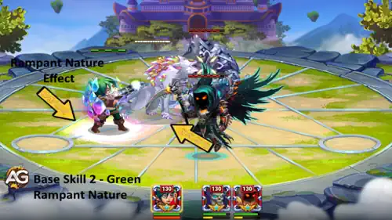
Explicación: La habilidad beneficia a Astrid y Lucas juntos. Más velocidad genera Furia antes y permite más ataques de Lucas antes de vaciarse su barra. Al máximo, la velocidad de ataque y habilidades aumenta un 159,8% durante nueve segundos, conectando todo el conjunto.
Fórmula - Velocidad: 159,8% (0,46 × nivel + 100)
Prioridad: Muy Alta - 1.ª – Evoluciónala primero: acelera la Furia, ataques básicos, habilidades y toda la ventana activa de Lucas.
- Recarga inicial: 1 segundo
- Recarga: 20 segundos
- Duración: 9 segundos
- Palabras clave: Velocidad de ataque, velocidad de habilidades, forma de Furia
2 - Temperamento Endurecido - Habilidad de Ascensión II
Descripción en el juego: Mientras Naturaleza desenfrenada está activa, Astrid recibe un 10%, 20% y finalmente 30% menos de daño. En el grado 3, la reducción del 30% también se aplica a todos los Cazadores del equipo.
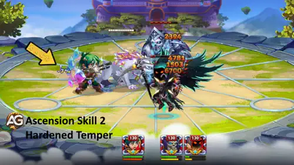
Explicación: Desbloquear Ascensión II convierte la ventana de velocidad en una ventana defensiva. Los primeros grados protegen a Astrid; el grado 3 es la gran recompensa y extiende la reducción de daño del 30% a todos los Cazadores mientras Naturaleza desenfrenada está activa. Es excelente, pero su valor para todo el equipo exige inversión tardía y los aliados correctos.
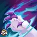
3 - Carga del Depredador (Azul/Pasiva)
Descripción en el juego: Habilidad pasiva. Mientras la mascota de Astrid esté en forma de Furia, cada ataque consecutivo inflige daño creciente.
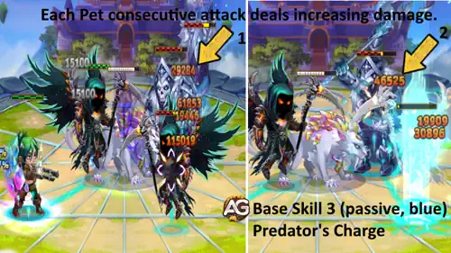
Explicación: Cada ataque ininterrumpido de Lucas es más fuerte que el anterior. Al nivel 130, cada golpe consecutivo añade un 7% de daño. Naturaleza desenfrenada es crucial porque más ataques en la misma ventana de Furia significan más acumulaciones y un final mucho más fuerte para su carga.
Fórmula - Aumento por Ataque: 7% (0,05 × nivel + 0,50)
Prioridad: Alta - 3.ª – Es la pasiva de daño creciente de Lucas. Evoluciónala después de las dos primeras, pues solo funciona mientras ya está en forma de Furia.
- Palabras clave: Pasiva, forma de Furia, ataques consecutivos, daño acumulativo
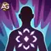
4 - Marca del Cazador (Violeta/Pasiva)
Descripción en el juego: Habilidad pasiva. Cada ataque de la heroína aplica la Marca del cazador al objetivo durante 4 segundos. Si la mascota ataca a un objetivo marcado, lo aturde brevemente. La probabilidad de aturdir disminuye si el objetivo supera el nivel 130.
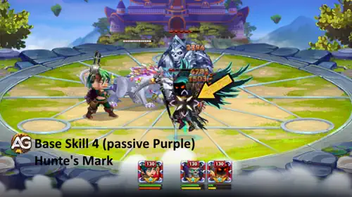
Explicación: Astrid marca lo que dispara y Lucas convierte esas marcas en aturdimientos breves. Sus ataques de área pueden aturdir a todos los enemigos marcados alcanzados, no solo al objetivo principal. La marca ya no se considera efecto negativo, así que Sebastian y limpiezas similares no pueden bloquearla ni eliminarla. Es la misma Marca del cazador que usa Adam.
Prioridad: Media Alta - 4.ª – Mantenla al nivel adecuado para conservar una probabilidad fiable contra enemigos cercanos al nivel de Astrid. El daño va primero para principiantes, pero descuidarla elimina gran parte de su control.
- Duración: 4 segundos
- Palabras clave: Marca del cazador, aturdimiento, marca inamovible, sinergia de Cazadores
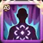
4 - La Emoción de la Caza - Habilidad de Ascensión V
Descripción en el juego: Astrid obtiene 100, 200, 300 y finalmente 500 de Furia al comenzar la batalla. En el grado 3, cada vez que un objetivo con Marca del cazador recibe daño de cualquier Cazador, Astrid obtiene 30 de Furia adicional.
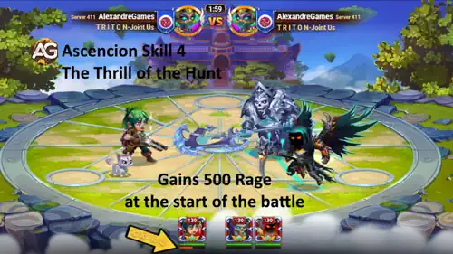
Explicación: La Furia inicial libera a Lucas antes de que el enemigo establezca su rotación. El grado 3 cambia todo el plan: cada golpe de un Cazador sobre un objetivo marcado concede 30 de Furia adicional. Adam es especialmente interesante porque comparten la marca. Es un desbloqueo tardío que debe reforzar una build funcional, no distraer al principiante de las cuatro habilidades básicas.
Mejor Patronazgo de Mascotas para Astrid y Lucas
Astrid puede recibir el patronazgo de Fenris, Mara o Vex. La mejor elección depende de si necesitas presión física directa, control más duradero o daño más concentrado.

1 - Fenris: Mejor Patronazgo General
Fenris fortalece el plan de daño físico y ayuda a Astrid contra objetivos blindados. Es mi primera elección cuando el equipo necesita daño constante de Astrid y Lucas en vez de prolongar el control.
Prioridad: Muy Alta

2 - Mara: Mejor Patronazgo de Control
Mara complementa la Marca del cazador cuando dependes de que Lucas mantenga aturdidos a los objetivos marcados. Elígela cuando controlar la rotación enemiga importe más que añadir presión física.
Prioridad: Alta

3 - Vex: Alternativa Ofensiva
Vex encaja en composiciones que concentran daño en el enemigo marcado por Astrid. Es una alternativa fuerte cuando la formación busca enfocar y eliminar rápidamente un objetivo.
Prioridad: Media Alta
Prioridad de las Mejores Skins de Astrid y Lucas
Astrid ya tiene bastante Penetración de Armadura, pero mantenerla por encima de la Armadura enemiga es esencial. Después, el Ataque Físico mejora el daño de ambos, mientras la Skin Solar es la inversión defensiva.
1 - Skin Romántica
Penetración de Armadura +10.650
Prioridad: Muy Alta – Decide si el daño físico atraviesa al enemigo o se detiene ante su Armadura.
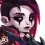
2 - Skin Demoníaca
Ataque Físico +7.095
Prioridad: Alta – Mejora directamente los ataques de Astrid y la fórmula de Lucas.
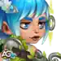
3 - Skin de Primavera
Ataque Físico +7.095
Prioridad: Alta – Da la misma estadística que la Skin Demoníaca; desarrolla primero la que ya tengas.
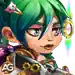
4 - Skin Predeterminada
Agilidad +1.365
Prioridad: Media Alta – La estadística principal añade Ataque Físico y Armadura, una inversión equilibrada tras las skins ofensivas especializadas.
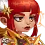
5 - Skin Solar
Salud +106.645
Prioridad: Media – Es valiosa contra ráfagas, pero no acelera la Furia ni mejora el daño de Lucas.
Prioridad de los Mejores Artefactos de Astrid y Lucas

1 - Folio del Alquimista
Ataque Físico +5.577 y Penetración de Armadura +16.731
Es la mejora de daño personal más fiable porque ambas estadísticas mejoran directamente la presión física. La Penetración de Armadura es especialmente importante contra tanques desarrollados.
Prioridad: Muy Alta

2 - Anillo de Agilidad
Agilidad +6.249
El anillo aumenta la estadística principal de Astrid, elevando Ataque Físico y Armadura juntos. Ofrece una mejora equilibrada de daño y supervivencia tras desarrollar el libro.
Prioridad: Alta
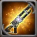
3 - Mosquete de la Princesa
Bono de Armadura para el equipo +50.190
El arma activa su bono de Armadura después de la definitiva de Astrid. Protege a todo el equipo durante la carga de Lucas, pero al principio suele importar más mejorar el daño propio de Astrid.
Prioridad: Media Alta
Prioridad de los Mejores Glifos de Astrid y Lucas
1 - Penetración de Armadura
Penetración de Armadura +6.500 – Muy Alta. La primera inversión más segura para causar daño físico constante.
2 - Ataque Físico
Ataque Físico +4.340 – Alta. Mejora los disparos de Astrid y la fórmula de Lucas.
3 - Agilidad
Agilidad +1.135 – Alta. Mejora equilibrada, ofensiva y defensiva, de la estadística principal.
4 - Salud
Salud +62.200 – Media. Ayuda a Astrid a sobrevivir a la ráfaga hasta llenar la Furia.
5 - Armadura
Armadura +6.500 – Media. Útil contra equipos físicos cuando el núcleo ofensivo ya está listo.
Mejores Héroes con Sinergia para Astrid y Lucas

Adam es el compañero más evidente porque usa la misma Marca del cazador. Cuando La Emoción de la Caza alcanza el grado 3, su daño contra objetivos marcados ayuda a generar 30 de Furia para Astrid y devuelve a Lucas antes a la acción.
La clave no es simplemente añadir héroes de daño. Astrid necesita Cazadores que golpeen repetidamente a objetivos marcados durante los cuatro segundos de la marca. Con Temperamento endurecido al máximo, esos aliados también reciben un 30% de reducción de daño durante Naturaleza desenfrenada, así que el mismo ciclo mejora a la vez el ataque y la supervivencia.
Conclusión
Astrid y Lucas recompensan la paciencia más que la mayoría de los Tiradores. La build inicial puede sentirse lenta porque el ataque básico de cinco segundos de Astrid retrasa la Furia, pero Naturaleza desenfrenada cambia ese ritmo drásticamente. Prioriza velocidad, Penetración de Armadura y Ataque Físico; después deja que la Ascensión convierta al dúo en el centro de una composición de Cazadores.
Lo que hace que valga la pena desarrollarlos no es solo el daño. Lucas crea temporalmente una primera línea, los objetivos marcados se vuelven vulnerables a aturdimientos y los counters de Energía no pueden interferir con la barra roja de Furia de Astrid. Si disfrutas de héroes con una mecánica distintiva y de un equipo que se fortalece mediante coordinación, este dúo ofrece uno de los estilos de juego más interesantes de Dominion Era.
Explora Más Guías de Hero Wars Dominion Era


¡Deja Tu Opinión!
¿Te gustó nuestra guía de Astrid y Lucas? ¿Hay algo que no entendiste o te gustaría sugerir un cambio? Participa en los comentarios del Blog Alexandre Games y comparte tu experiencia con este dúo de Cazadores.